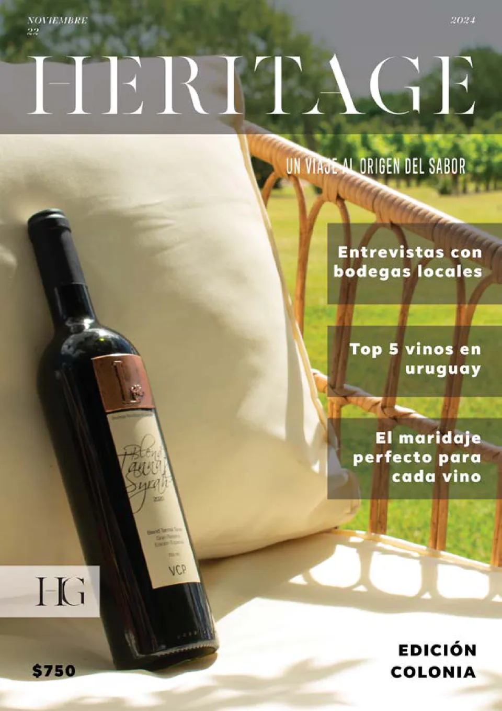
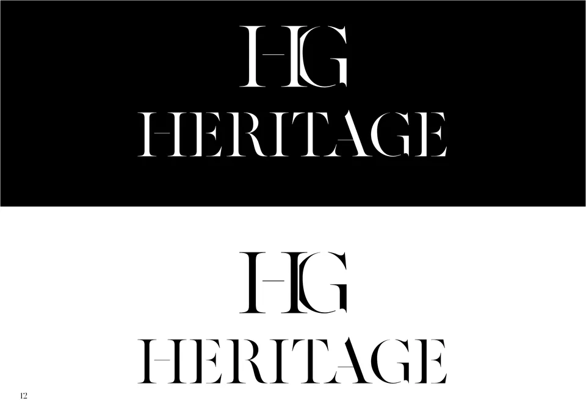
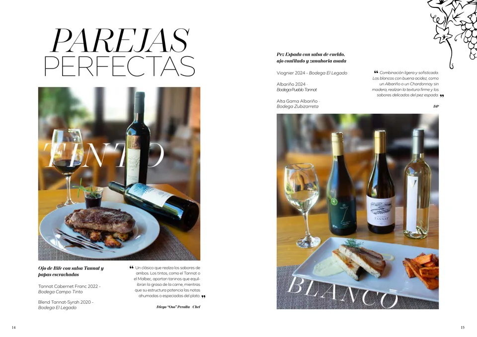
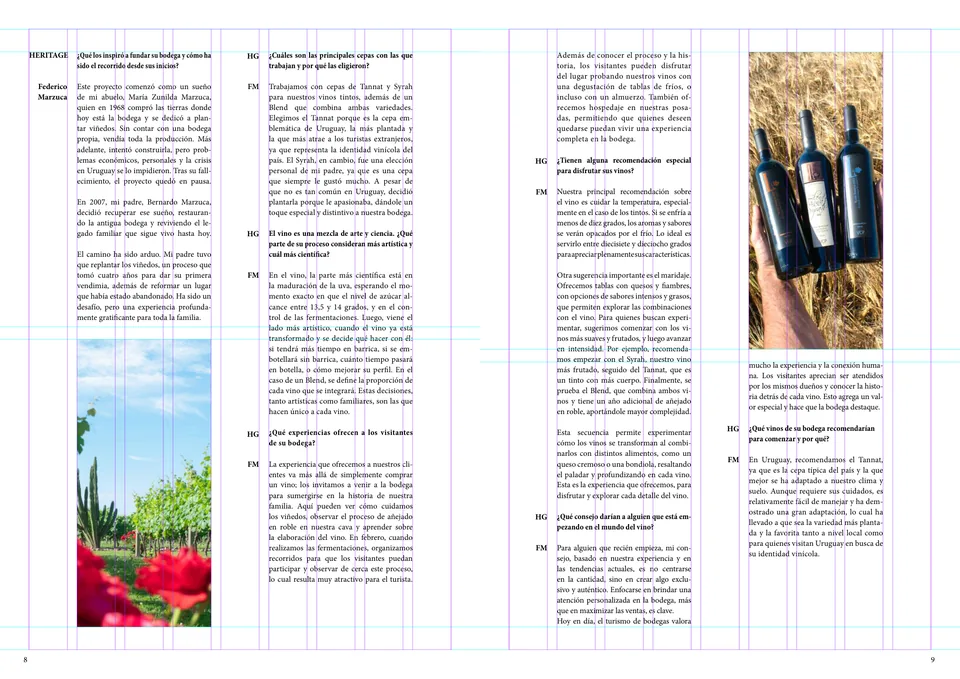
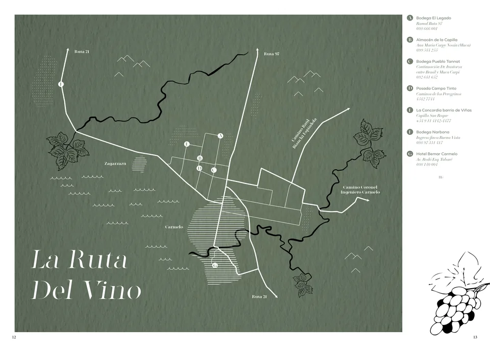
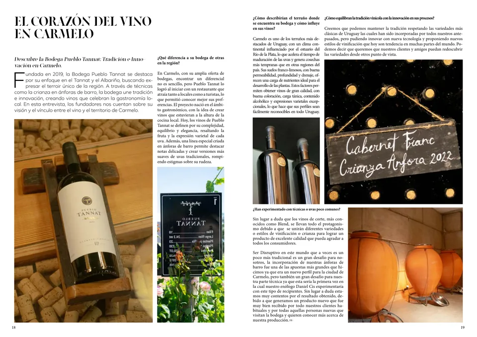
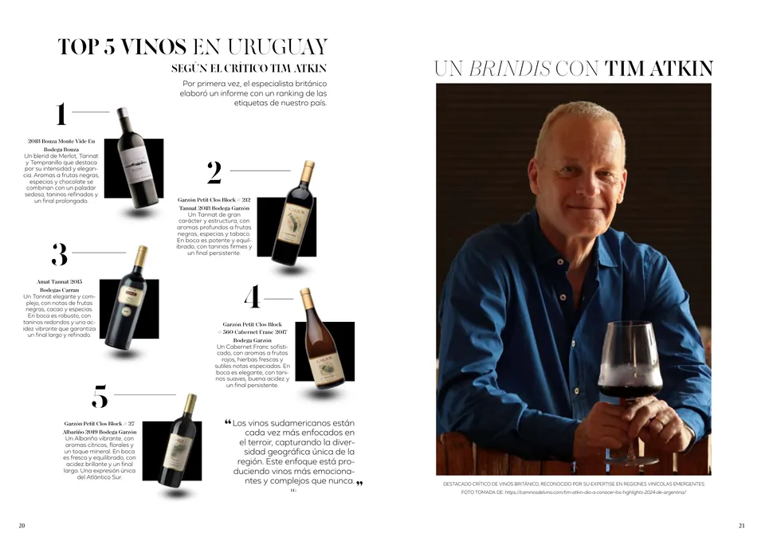
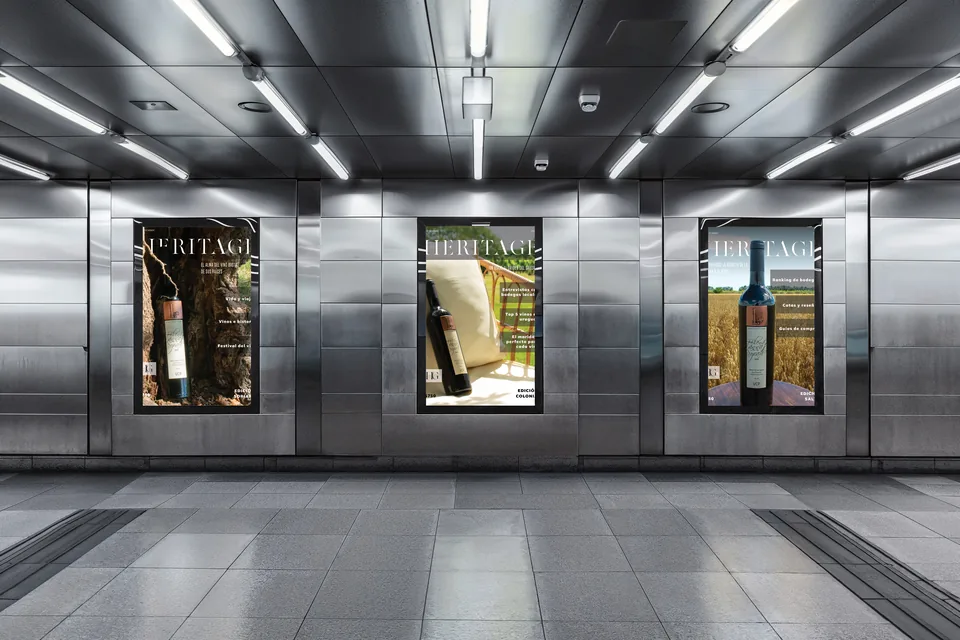
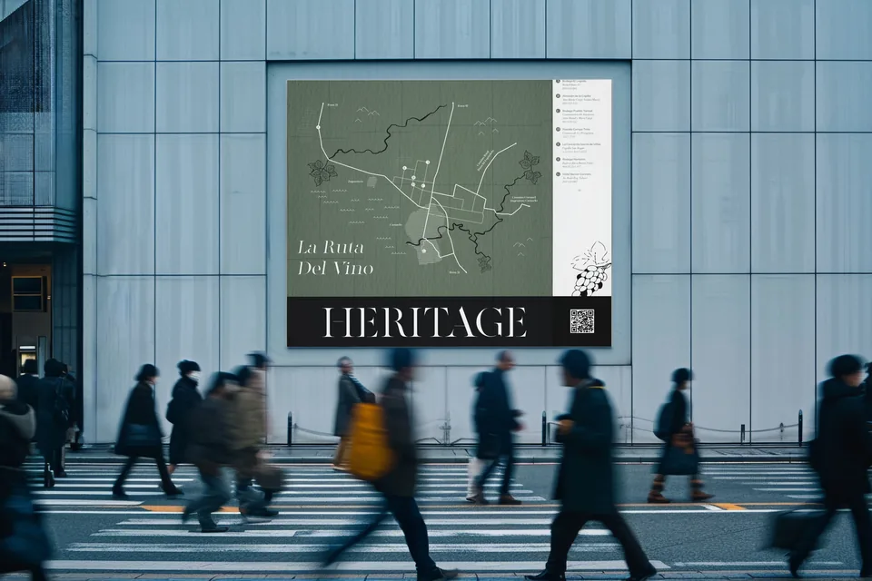

03 / 07
Heritage
A magazine about Uruguay's boutique wineries.
- Year
- 2024
- Context
- 2nd semester final project, UDE
- Role
- Concept, identity and layout

HERITAGE gathers the stories of Uruguay's boutique wineries: how they make wine, what they think about it and what they leave behind. Each issue focuses on one department, with a recognisable landscape and a local bottle on the cover. This first one is about Carmelo.

The name
Heritage means legacy, and the word reads French, the language people link to wine almost without thinking. The monogram overlaps the logotype's H and G: the H in front is the wineries' present, the G behind is their past.

Factum is a stencil face: the lettering painted onto wood and metal so it lasts.

Grid
Nine well-spaced columns and plenty of white. The reference was the houses in luxury ads: high ceilings, neutral colours, empty space. The vine-leaf illustrations break that symmetry and add something organic to the flat page.




Colour
Almost everything in black and white, so text and photography lead. The colour comes from the wine and the landscape.

